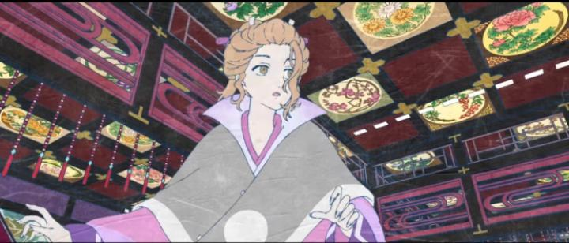

Disclaimer: This is a review of 2024's "Mononoke: Karakasa," titled "Mononoke the Movie - Phantom in the Rain" in its English film festival listing. WHOOO! I never expected this... nearly 20 years after the bizzarely abstract "Mononoke" anime aired, I assumed we'd never get it, or anything like it, again. But demons just won't stay dormant... after a successful crowdfunding campaign, a feature film continuation would debut in 2024. And "Mononoke the Movie - Phantom in the Rain" had its WORLD PREMIRE was at Fantasia Film Festival in Montreal, Canada! I've never booked a film ticket so fast, and good I did, because it was a packed house. My thoughts of the original "Mononoke" series are conflicted. I love the advant-garde style, but if there was an example of "too much style," this is it. Similarly, the story arcs follow a strict pattern, allowing for some tense drama, but abstract the events and resolutions. Would the movie take the chance to improve on these flaws to cater to a larger audience? No. I was shocked at how similar the production was, fitting seemlessly next to the 2007 anime series. It is more of the same, for better or for worse. This time, the arc revolves around the Ooku palace, the home of the great Lord Tenshi. It holds thousands of staff, from childbearers to maidservants that maintain the home, all exclusively women, aside from some male guards outside, tasked to execute any man that enters the grounds. Two young women join the staff on the first day, both excited for the palace's splendor and swooning for the Lord's gaze. One is well-mannered and collected, taking to her responsibilities well. The other is immature, frequently forgetting her place and duties. Having joined on the same day, they instantly become friends, but differences in how they adapt to the seriousness of the work wedges between them. The senior staff quickly grow annoyed at one and jealous of the other. Meanwhile, they're preparing for a massive parade to celebrate a successful birth... although the parade was postponed two months prior... around the time one of the staff suddenly fell ill and left... but did anyone see her leave? The Medicine Seller happens to be in town for business, and he stays and waits, sensing an evil that's about to burst as tensions build. The idea of a Lord with a harem of women paints a certain picture, but the story strictly follows the perspective of the maidservants, so we don't see much of that aspect of the house. Instead, it's a drama about friendship, and whether to "throw away" parts of yourself. The entire first half (a good 45 minutes) is entirely setup of the atmosphere and world-building. It's interesting, but doesn't cover the most interesting things about this world, and is ultimately slow. Even this animation was modest here, not much better than the television anime ever was. The mannifest tension that grows, especially in the music, is the thing that kept me alert.  But of course, the second half booms, with the Mononoke yokai finally lashing out, and the Medicine Seller searching for the three secrets that allow him to slay it. The camera whips in 3D, and psychedelic patterns melt across the walls and floors. Music and sound design is vicious and unrelenting; it alone justifies this as a theatrical experience, with the best speakers available to you. If patient enough to last through the first half, the second half, though predictible, delivers. Briefly on the topic of production: if you haven't seen the "Mononoke" series in motion, you simply must. I can't guarantee you'll like it, but the detailed patterns make it a Japanese painting come alive, unlike any other work of animation. The film continues the same level of work as the series, with maybe only 30 seconds worth being an upgrade of animation compared to the older work, but seeing it in HD on a large screen does benefit it. I was surprised that they brought back the same "textured-paper" overlay the series had, which was cool, but made the picture even noiser in detail... again, the HD pipeline alievates the issues a bit (and would justify a 4K Bluray bitrate, if a disc becomes available), but I'd love to have seen a clean image instead. "Phantom in the Rain's" story felt particularly strange in its ending however. It gives us a resolution without the film addressing larger details of the Ooku palace, or ignoring breadcrumbs that were left by side characters (a reference to a "water god" isn't expanded, and I don't think we ever see Lord Tenshi or the ill women whose delivery they're celebrating). And the last five minutes coyly give ambiguity to whether things were resolved, and the Medicine Seller's state. Is this really the end of this arc, or is there more to the story? In the audience, we were teased that more movies might yet be coming, and from the cryptic image in the credits of three large ropes tied to pillars, one of which is broken... I'll predict now that this might be just the first of a trilogy. If so, I'm ready for it, and hope it finds an audience as excited as the one I sat in.(EDIT: A week after I wrote a draft of this review, it was officially announced that this is indeed the first of a trilogy. We don't know yet how interconnected the films are. Just pointing out I'm proud of myself for predicting this early.)
- "Ani" More reviews can be found at : https://2danicritic.github.io/ Previous review: review_Mononoke Next review: review_Monster_Musume_-_Everyday_Life_With_Monster_Girls